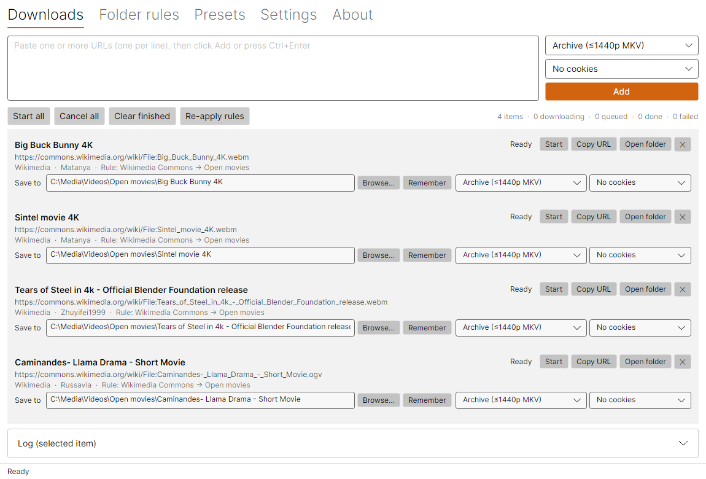
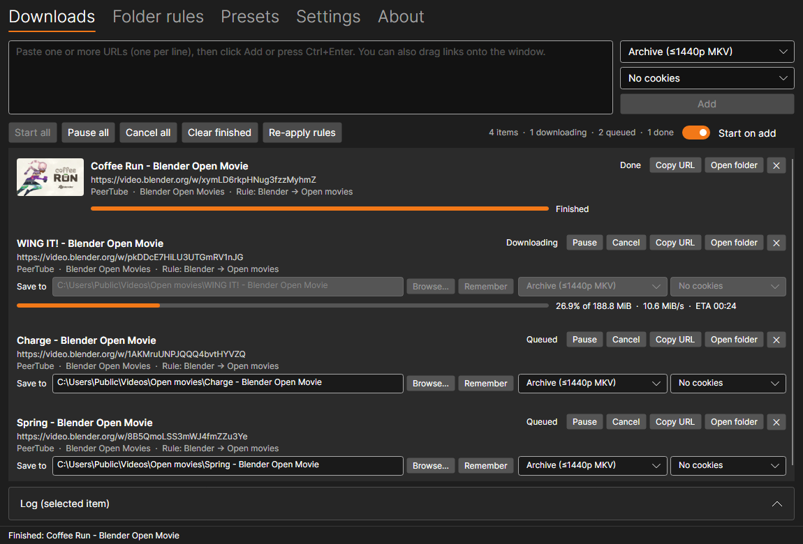

Vid Archiver GUI
A graphical front end for yt-dlp, inspired by the yt-dlg oleksis fork. It's designed to be dead simple to use and to fix the minor things that annoyed me with other GUIs. The big addition is folder rules, which pick the destination folder automatically based on where a video comes from.
This was an experiment with Claude Opus 5.5 and it went fairly well. Since I reviewed and edited the code I do not consider this to be "vibe coded" but almost all the code in one way or another was written by Claude. I consider it ready to use.

